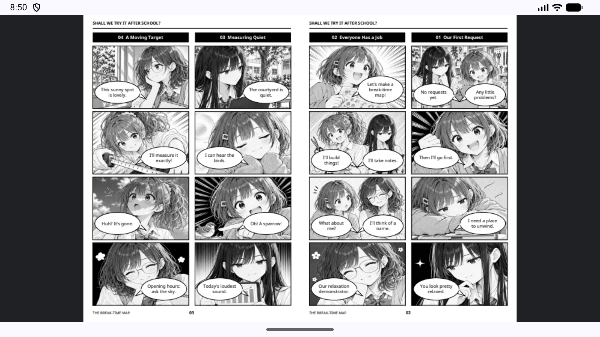
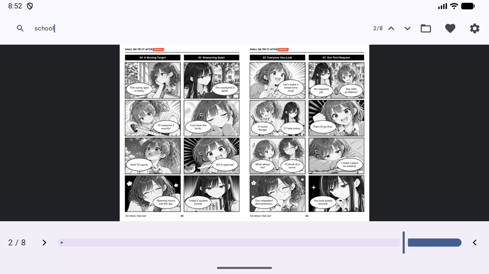
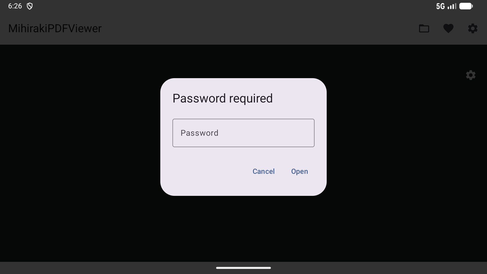
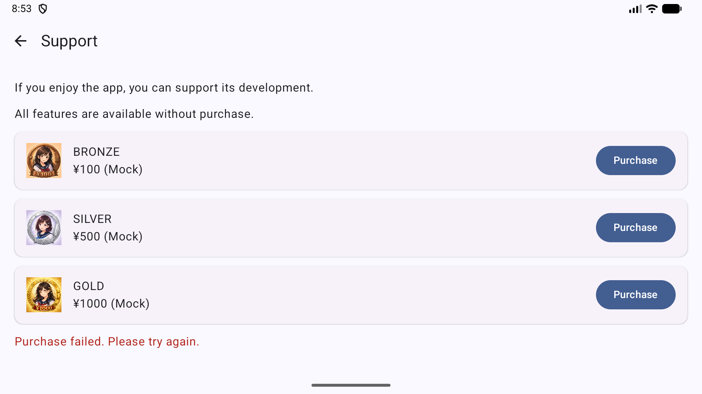
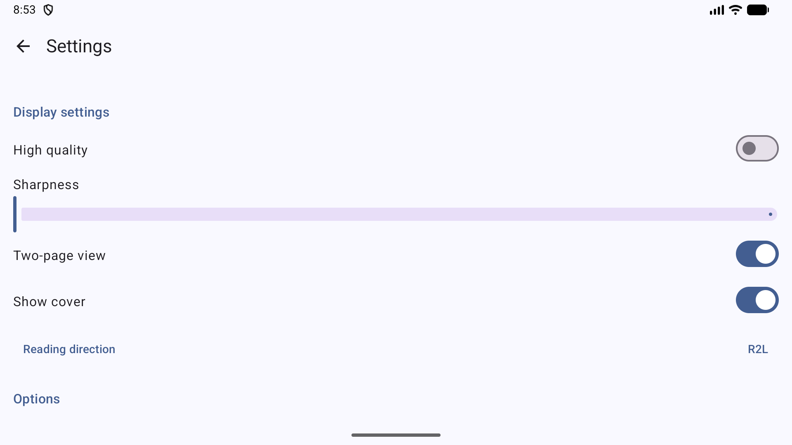

A modern PDF viewer optimized for two-page spreads and R2L reading on Android
View two pages side-by-side. Perfect for immersive manga and art book layouts.
Full support for right-to-left reading order, including inverted sliders and intuitive swipe gestures.
Automatically detects page layout and reading direction from PDF metadata for a zero-config experience.
Fast text search with accurate hit highlighting (yellow background and red border) on documents.
Extracts bookmarks and chapters from PDF metadata for instant jumping to any section.
Quick access to Settings, Help, Version, Diagnostics, and Support from the top bar menu, featuring an accordion Help screen.
Automatically optimized for tablets, large screens, and foldables using responsive constraints.
Intuitive page turning by clicking the left and right edges on desktop/mouse navigation mode, configurable in Settings.
Automatically switches to single-page display in portrait orientation (enabled by default, configurable in Settings).





Try out MihirakiPDFViewer with these sample PDF files:
"The Try-It Club" Episodes 1 & 2
© 2026 Komairo Biyori
Parts of this work to which the publisher holds copyright and other licensable rights are provided under the Creative Commons Attribution 4.0 International (CC BY 4.0) license.
https://creativecommons.org/licenses/by/4.0/
When reusing this work, please display the title, author name "Komairo Biyori", the publisher of the original work, and a link to the license, and clearly indicate if any changes were made.
This work uses generative AI for the creation of text, images, and translation. Materials whose rights belong to third parties, such as fonts, are subject to their respective licenses. This notice does not restrict the use of parts of the work that are not protected by copyright or similar rights.
MihirakiPDFViewer is designed with privacy at its core.
*Note: Internet connection is only used when explicitly opening files from cloud storage services like Google Drive.
Free & Ad-Free
The app is completely free to use. All core features, such as PDF viewing, spreads, and search, are available without any restrictions regardless of purchase.
*Optional in-app tips (Bronze, Silver, Gold, and Ver.2.0 Release Commemoration Koyomi Badge) are available to support the developer. Supporters will see special commemorative badges in the Settings screen (Play Console promo codes are also supported for free badge redemption).